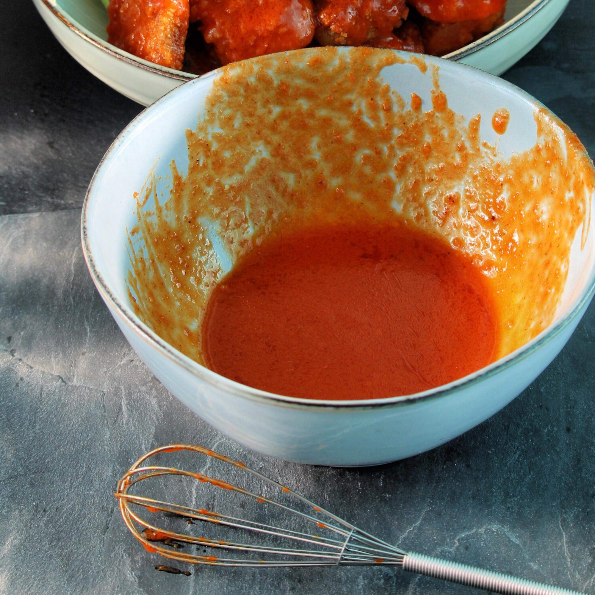

Buffalo Chicken Wing Sauce

Description
If you know someone from Buffalo, they know someone who told them the secret ingredients to the Anchor Bar's famous Buffalo chicken wings. I know people from Buffalo. This is my version, as described to me many years ago, over almost as many beers.
Ingredients
- 2/3 cup hot pepper sauce
- 1/2 cup cold unsalted butter
- 1 1/2 tablespoons white vinegar
- 1/4 teaspoon Worcestershire sauce
- 1/4 teaspoon cayenne pepper
- 1/8 teaspoon garlic powder
- salt to taste
Directions
-
Combine the hot sauce, butter, vinegar, Worcestershire sauce, cayenne pepper, garlic powder, and salt in a pot and place over medium heat. Bring to a simmer while stirring with a whisk. As soon as the liquid begins to bubble on the sides of the pot, remove from heat, stir with the whisk, and set aside for use.
Link to original recipe